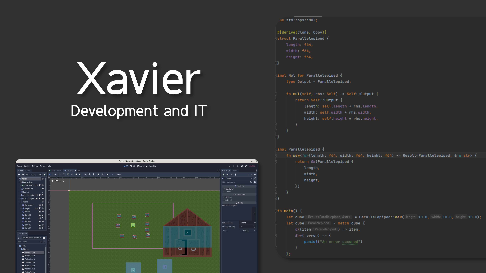

Hi, I am Xavier, a developer and enthusiast of all things Computer Science. This website is hosted on Github Pages, and you can find my Github profile here.
fn main() {
println!("Welcome...");
}
#include <iostream>
int main() {
std::cout << "to my site!\n";
}